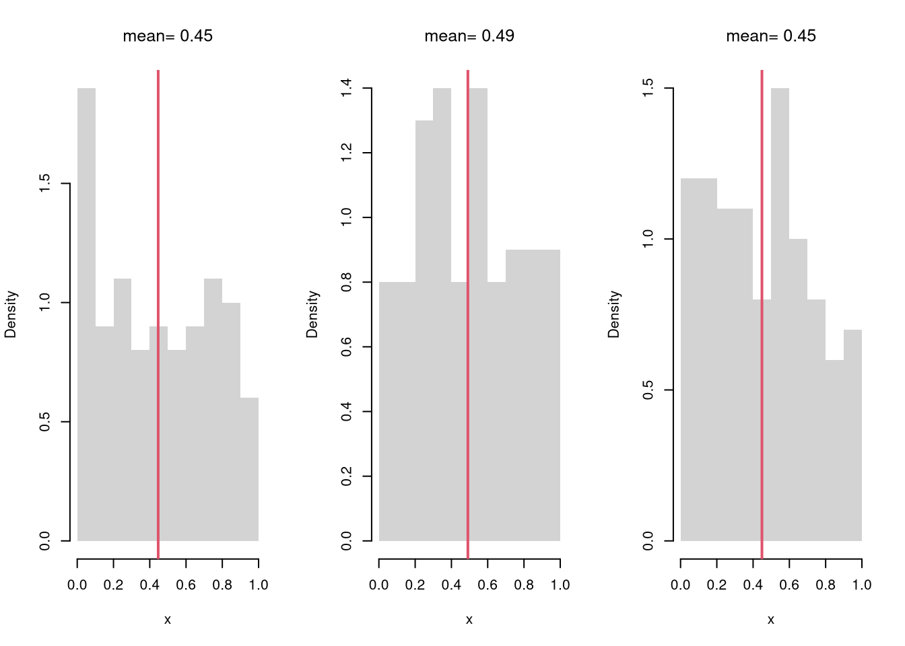

Code
# Simple random sample (no duplicates, equal probability)
x <- c(1,2,3,4) # population
sample(x, 2, replace=F) #sample
## [1] 3 2A sample is a subset of the population. A simple random sample is a sample where each possible sample of size \(n\) has the same probability of being selected.
Often, we think of the population as being infinitely large. This is an approximation that makes mathematical and computational work much simpler.
#All possible samples of two from an enormous bag of numbers {1,2,3,4}
#{1,1} {1,2} {1,3}, {3,4}
#{2,2} {2,3} {2,4}
#{3,3} {3,4}
#{4,4}
# Simple random sample (duplicates, equal probability)
sample(x, 2, replace=T)
## [1] 2 4Intuition for infinite populations: imagine drawing names from a giant urn. If the urn has only \(10\) names, then removing one name slightly changes the composition of the urn, and the probabilities shift for the next name you draw. Now imagine the urn has \(100\) billion names, so that removing one makes no noticeable difference. We can pretend the composition never changes: each draw is essentially identical and independent (iid). We can actually guarantee the names are iid by putting any names drawn back into the urn (sampling with replacement).
In R, you can sample from a continuous population using these using rXXX functions, where XXX is the the population type (unif, exp, norm)
The sampling distribution of a statistic shows us how much a statistic varies from sample to sample.
For example, the sampling distribution of the mean shows how the sample mean varies from sample to sample to sample. The sampling distribution of mean can also be referred to as the probability distribution of the sample mean.
Given ages for population of \(4\) students, compute the sampling distribution for the mean with samples of \(n=2\).
X <- c(18,20,22,24) # Ages for student population
# six possible samples
m1 <- mean( X[c(1,2)] ) #{1,2}
m2 <- mean( X[c(1,3)] ) #{1,3}
m3 <- mean( X[c(1,4)] ) #{3,4}
m4 <- mean( X[c(2,3)] ) #{2,3}
m5 <- mean( X[c(2,4)] ) #{2,4}
m6 <- mean( X[c(3,4)] ) #{3,4}
# sampling distribution
sample_means <- c(m1, m2, m3, m4, m5, m6)
hist(sample_means,
freq=F, breaks=100,
main='', border=F)
Now compute the sampling distribution for the median with samples of \(n=3\).
# Three Sample Example w/ Visual
par(mfrow=c(1,3))
for(b in 1:3){
x <- runif(100)
m <- mean(x)
hist(x,
breaks=seq(0,1,by=.1), #for comparability
freq=F, main=NA, border=NA)
abline(v=m, col=2, lwd=2)
title(paste0('mean= ', round(m,2)), font.main=1)
}
Examine the sampling distribution of the mean
# Many sample example
sample_means <- vector(length=500)
for(i in seq_along(sample_means)){
x <- runif(1000)
m <- mean(x)
sample_means[i] <- m
}
hist(sample_means,
breaks=seq(0.45,0.55,by=.001),
border=NA, freq=F,
col=2, font.main=1,
xlab=expression(hat(M)),
main='Sampling Distribution of the mean')In this figure, you see two the most profound results known in statistics
There are different variants of the Law of Large Numbers (LLN), but they all say some version of “the sample mean is centered around the true mean, and more tightly centered with more data”.
There are different variants of the central limit theorem (CLT), but they all say some version of “the sampling distribution of the mean is approximately normal”. For example, the sampling distribution of the mean, shown above, is approximately normal.
It is beyond this class to prove this result mathematically, but you should know that not all sampling distributions are standard normal. The CLT approximation is better for “large \(n\)” datasets with “well behaved” variances. The CLT also does not apply to “extreme” statistics.
The Law of Large Numbers generalizes to many other statistics, like median or sd.1
In fact, the Glivenko-Cantelli Theorem (GCT) shows entire empirical distribution converges: the ECDF gets increasingly close to the CDF as the sample sizes grow. This result is often termed the The Fundamental Theorem of Statistics.
par(mfrow = c(1, 3))
for (n in c(50, 500, 5000)) {
x <- runif(n)
Fx <- ecdf(x)
plot(Fx)
}
Often, we only have one sample. How then can we estimate the sampling distribution of a statistic?
sample_dat <- USArrests[,'Murder']
sample_mean <- mean(sample_dat)
sample_mean
## [1] 7.788We can “resample” our data. Hesterberg (2015) provides a nice illustration of the idea. The two most basic versions are the jackknife and the bootstrap, which are discussed below.

Note that we do not use the mean of the resampled statistics as a replacement for the original estimate. This is because the resampled distributions are centered at the observed statistic, not the population parameter. (The bootstrapped mean is centered at the sample mean, for example, not the population mean.) This means that we do not use resampling to improve on \(\hat{M}\). We use resampling to estimate sampling variability.
Here, we compute all “leave-one-out” estimates. Specifically, for a dataset with \(n\) observations, the jackknife uses \(n-1\) observations other than \(i\) for each unique subsample.
sample_dat <- USArrests[,'Murder']
sample_mean <- mean(sample_dat)
# Jackknife Estimates
n <- length(sample_dat)
jackknife_means <- vector(length=n)
for(i in seq_along(jackknife_means)){
dat_noti <- sample_dat[-i]
mean_noti <- mean(dat_noti)
jackknife_means[i] <- mean_noti
}
hist(jackknife_means, breaks=25,
border=NA, freq=F,
main='', xlab=expression(hat(M)[-i]))
abline(v=sample_mean, col='red', lty=2)
Here, we draw \(n\) observations with replacement from the original data to create a bootstrap sample and calculate a statistic. Each bootstrap sample \(b=1...B\) uses a random subset of observations to compute a statistic. We repeat that many times, say \(B=9999\), to estimate the sampling distribution.
# Bootstrap estimates
bootstrap_means <- vector(length=9999)
for(b in seq_along(bootstrap_means)){
dat_id <- seq(1,n)
boot_id <- sample(dat_id , replace=T)
dat_b <- sample_dat[boot_id] # c.f. jackknife
mean_b <- mean(dat_b)
bootstrap_means[b] <-mean_b
}
hist(bootstrap_means, breaks=25,
border=NA, freq=F,
main='', xlab=expression(hat(M)[b]))
abline(v=sample_mean, col='red', lty=2)
Why does this work? The sample: \(\{\hat{X}_{1}, \hat{X}_{2}, ... \hat{X}_{n}\}\) is drawn from a CDF \(F\). Each bootstrap sample: \(\{\hat{X}_{1}^{(b)}, \hat{X}_{2}^{(b)}, ... \hat{X}_{n}^{(b)}\}\) is drawn from the ECDF \(\hat{F}\). With \(\hat{F} \approx F\), each bootstrap sample is approximately a random sample. So when we compute a statistic on each bootstrap sample, we approximate the sampling distribution of the statistic.
Using either the bootstrap or jackknife distribution, we can estimate variability of the sampling distribution of the statistic via the Standard Error. In either case, this differs from the standard deviation of the data within your sample.
sd(sample_dat) # standard deviation
## [1] 4.35551
sd(bootstrap_means) # standard error
## [1] 0.6040716Note that both Jackknife and Bootstrap resampling methods provide imperfect estimates, and can give different numbers. Jackknife resamples are often less variable than they should be and sample \(n-1\) instead of \(n\). Bootstrap resamples have the right \(n\) but often have duplicated data. Until you know more, a conservative rule-of-thumb is to take the larger estimate (often the bootstrap). That is also a good rule-of-thumb when considering theoretically derived confidence intervals too.
Also note that each additional data point you have provides more information, which ultimately decreases the standard error of your estimates. This is why statisticians will often recommend that you to get more data. However, the improvement in the standard error increases at a diminishing rate. In economics, this is known as diminishing returns and why economists may recommend you do not get more data.
B <- 1000 # number of bootstrap samples
Nseq <- seq(1,100, by=1) # different sample sizes
SE <- vector(length=length(Nseq))
for(n in Nseq){
sample_statistics_n <- vector(length=B)
for(b in seq(1,B)){
x_b <- rnorm(n) # Sample of size n
x_stat_b <- quantile(x_b, probs=.4) # Stat of interest
sample_statistics_n[b] <- x_stat_b
}
se_n <- sd(sample_statistics_n) # How much the stat varies across samples
SE[n] <- se_n
}
plot(Nseq, SE, pch=16, col=grey(0,.5),
ylab='standard error', xlab='sample size')
When a statistic converges in probability to the quantity they are meant to estimate, they are called consistent.↩︎